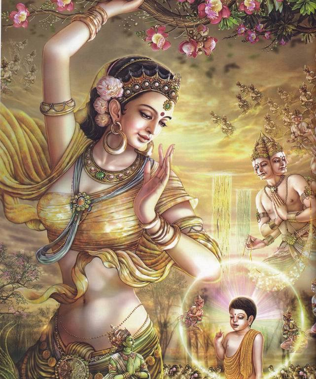
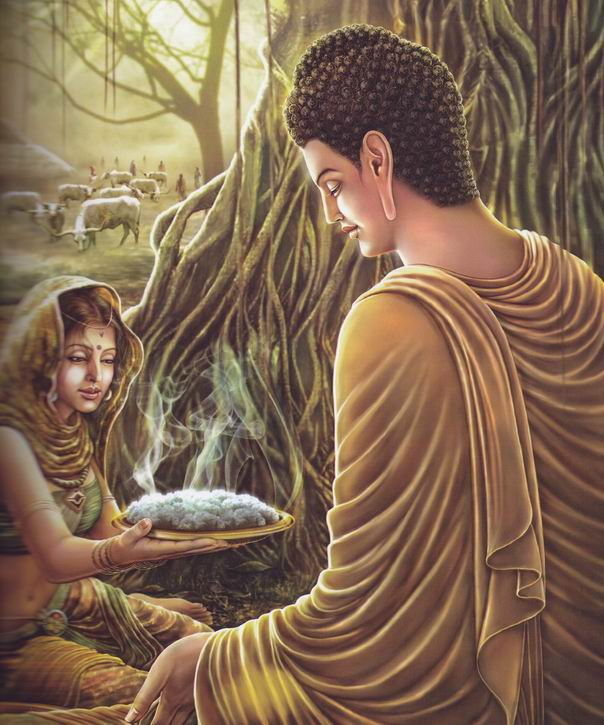
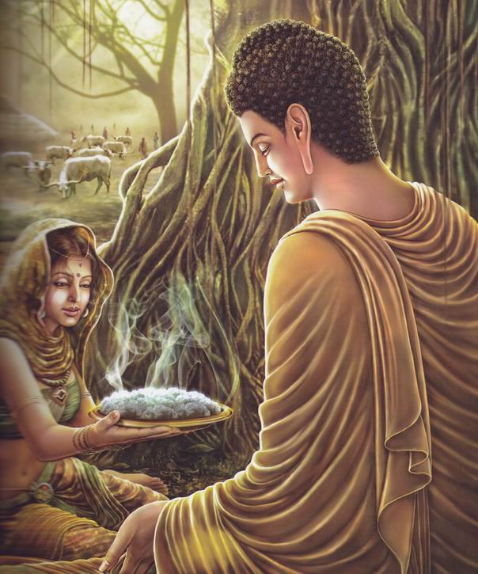
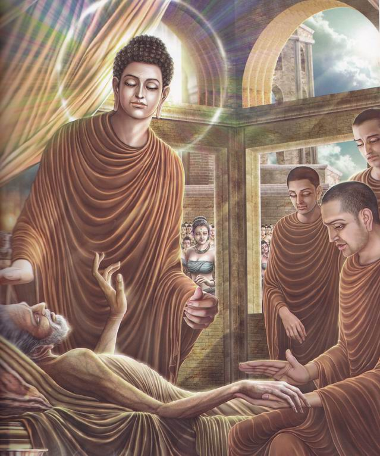
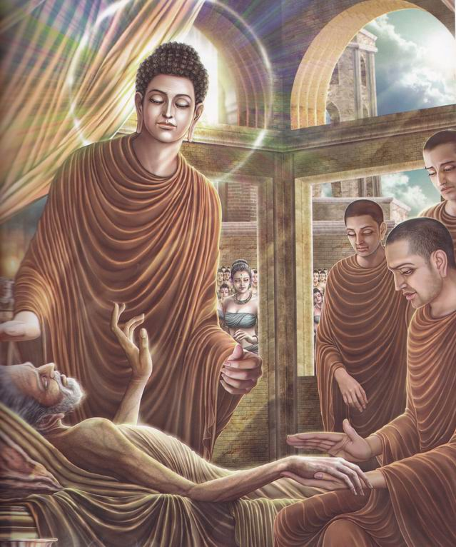

至尊佛陀一生的画卷
释迦牟尼佛的前生：护明菩萨。

七步莲花：佛陀在蓝毗尼花园从母亲的右胁降生,行走七步，每一步都踩出一朵莲花,然后一手指天，一手指地的言说：天上天下，唯我独尊。
命名大典：佛陀以转轮圣王的身份降生人间，佛陀的父亲净饭王非常的疼爱自己的儿子。佛陀被命名为：乔达摩.悉达多。
仙人占相：佛陀的父亲请来了著名的大仙人来为佛陀占相，仙人看后告诉净饭王：您的儿子将来会成为伟大的觉者！可惜我老了，无法听闻他的妙法了。
得入四禅：太子见老鹰捕食蛇，心生悲悯，观察到众生的苦恼，而入禅定，得入四禅
文武过人：太子16岁，精通所有学问与武功，可谓文武双全。
成亲娶妻：父王见太子终日闷闷不乐，便为其安排了一件婚事，于是太子迎娶了美丽的耶输陀罗。
深受爱戴：太子与妻子深受百姓的爱戴。
见丑生厌：太子夜见宫女们的睡觉时的丑态，对轮回生起了极大的厌恶。
 出城四游：太子出城，见生老病死之苦，于众生生大悲悯，于轮回更生厌离。
夜别妻儿：一天夜晚，太子悄悄的走出房间，离开了妻子儿子。
削发更衣：悉达多削去了如烦恼一样的发丝，换上了梵天送来的衣服，开始修行
难忍苦行：悉达多向所有世间的“成就者”们求学，
尝试了世间所有的修行方式，达到了世间能达到的所有顶端境界，
但他发现并没有达到他出家的目的，于是放弃了苦行。
见天神于空中弹琴，了悟了中道

牧女献供：一位牧女向悉达多供养了奶粥，
悉达多因此得以恢复体力而重新开始修行。
出城四游：太子出城，见生老病死之苦，于众生生大悲悯，于轮回更生厌离。
夜别妻儿：一天夜晚，太子悄悄的走出房间，离开了妻子儿子。
削发更衣：悉达多削去了如烦恼一样的发丝，换上了梵天送来的衣服，开始修行
难忍苦行：悉达多向所有世间的“成就者”们求学，
尝试了世间所有的修行方式，达到了世间能达到的所有顶端境界，
但他发现并没有达到他出家的目的，于是放弃了苦行。
见天神于空中弹琴，了悟了中道

牧女献供：一位牧女向悉达多供养了奶粥，
悉达多因此得以恢复体力而重新开始修行。
 发愿成佛：佛陀发愿成佛，以碗碟放入水中，
发愿曰：如若能成佛，则希望碗碟逆流而上。
发愿成佛：佛陀发愿成佛，以碗碟放入水中，
发愿曰：如若能成佛，则希望碗碟逆流而上。
 树下参悟：佛陀于菩提树下参悟，发誓不成正觉不离此座。
当雨水下落天气寒冷时，龙王现身为佛陀遮风挡雨。
魔女献媚：佛陀的参悟惊动了魔王波旬，
于是魔王派遣他的三个女儿前来魅惑佛陀，
试图让佛陀放弃参悟，然而佛陀不为所动。
水淹魔军：魔王见佛陀不为魔女所动，大为恼怒，
派遣魔军前来妄图杀害佛陀。此时坚牢地神现身护持佛陀，水淹魔军。
魔军败退：魔王波旬的种种手段都没能得逞，终于败退
成等正觉：佛陀终于夜睹明星而悟宇宙真谛，
叹曰：一切众生本具如来智慧德相！
从此，佛陀成就了宇宙中最完善慈悲与智慧
梵天献花：天主大梵天得知佛陀成就最正觉，
特前来向佛陀献花，以此缘起恳请佛陀为众生宣说妙法，
让一切众生成就如佛陀一般伟大的生命品质。佛陀慈悲应允。
佛陀于鹿野苑度化了第一批弟子，开始了教化众生的事业。
出行教化：佛陀带领着弟子们秉承着中道，
履行着简朴的行为态度，四处出行，应机的教化着所有有缘的众生。
回宫省亲：佛陀的父亲病重卧床，佛陀带领弟子回宫省亲。
见昔日妻：佛陀与昔日的妻子耶输陀罗相见了，
并对她作了重要的开示。
儿子出家：佛陀的儿子罗睺罗拜舍利弗为师，而出家
父王逝世：佛陀见到了病重的父王，
并为他开示了三皈依法，父王因此得度。
逝世后，佛陀尽职孝道，亲自抬父王的棺椁，为世人以身作则。
升天说法：佛陀应天神的邀请，
不动而上升天宫为了报答母亲之恩德而升天说法。
重返人间：佛陀在天宫说法后，沿着天梯下返人间，
众天神恭敬围绕。
有一位王子贪恋自己美丽的妻子而不愿随佛出家，
于是佛带他来到天上。王子见天女容貌美丽至极，
反观人间女子更像狒狒一般，于是以此因缘而出家。
后来佛陀为了帮助他断除淫欲，
而带他去看了地狱中因过分贪着美色而感应到的烈焰痛苦，
于是这名王子真正的解脱了。
最后供养：佛陀接受了最后一次的供养，
以表现出疾病这样的方式提醒弟子们时刻不要忘记无常，
并表示即将进入大涅盘的境界。
入大涅盘：佛陀对弟子们做了最后的开示后，
安详的右卧，进入涅盘。所有的人都应佛陀入灭而悲泣难止，
大地震动，人神共悲，因为他们知道，他们的唯一依靠将离他们而去。
佛陀并没有像他方世界的佛陀那样选择长久的住世，
而是这么早就示现涅盘，因为他担心弟子们会因为他的长久住世而放逸修行，可见佛陀的良苦用心！然而佛陀的化身虽然离开了众生，
法身却是一直存在的，他存在于佛陀创立的僧团之中，
存在于法本文字之中，存在于整个虚空界，
只要有一个众生哪怕是微小的蝼蚁需要他的帮助，
只要因缘具足，佛陀的加持依然如住世时一样无二无别。
至尊佛陀一生的画卷。
树下参悟：佛陀于菩提树下参悟，发誓不成正觉不离此座。
当雨水下落天气寒冷时，龙王现身为佛陀遮风挡雨。
魔女献媚：佛陀的参悟惊动了魔王波旬，
于是魔王派遣他的三个女儿前来魅惑佛陀，
试图让佛陀放弃参悟，然而佛陀不为所动。
水淹魔军：魔王见佛陀不为魔女所动，大为恼怒，
派遣魔军前来妄图杀害佛陀。此时坚牢地神现身护持佛陀，水淹魔军。
魔军败退：魔王波旬的种种手段都没能得逞，终于败退
成等正觉：佛陀终于夜睹明星而悟宇宙真谛，
叹曰：一切众生本具如来智慧德相！
从此，佛陀成就了宇宙中最完善慈悲与智慧
梵天献花：天主大梵天得知佛陀成就最正觉，
特前来向佛陀献花，以此缘起恳请佛陀为众生宣说妙法，
让一切众生成就如佛陀一般伟大的生命品质。佛陀慈悲应允。
佛陀于鹿野苑度化了第一批弟子，开始了教化众生的事业。
出行教化：佛陀带领着弟子们秉承着中道，
履行着简朴的行为态度，四处出行，应机的教化着所有有缘的众生。
回宫省亲：佛陀的父亲病重卧床，佛陀带领弟子回宫省亲。
见昔日妻：佛陀与昔日的妻子耶输陀罗相见了，
并对她作了重要的开示。
儿子出家：佛陀的儿子罗睺罗拜舍利弗为师，而出家
父王逝世：佛陀见到了病重的父王，
并为他开示了三皈依法，父王因此得度。
逝世后，佛陀尽职孝道，亲自抬父王的棺椁，为世人以身作则。
升天说法：佛陀应天神的邀请，
不动而上升天宫为了报答母亲之恩德而升天说法。
重返人间：佛陀在天宫说法后，沿着天梯下返人间，
众天神恭敬围绕。
有一位王子贪恋自己美丽的妻子而不愿随佛出家，
于是佛带他来到天上。王子见天女容貌美丽至极，
反观人间女子更像狒狒一般，于是以此因缘而出家。
后来佛陀为了帮助他断除淫欲，
而带他去看了地狱中因过分贪着美色而感应到的烈焰痛苦，
于是这名王子真正的解脱了。
最后供养：佛陀接受了最后一次的供养，
以表现出疾病这样的方式提醒弟子们时刻不要忘记无常，
并表示即将进入大涅盘的境界。
入大涅盘：佛陀对弟子们做了最后的开示后，
安详的右卧，进入涅盘。所有的人都应佛陀入灭而悲泣难止，
大地震动，人神共悲，因为他们知道，他们的唯一依靠将离他们而去。
佛陀并没有像他方世界的佛陀那样选择长久的住世，
而是这么早就示现涅盘，因为他担心弟子们会因为他的长久住世而放逸修行，可见佛陀的良苦用心！然而佛陀的化身虽然离开了众生，
法身却是一直存在的，他存在于佛陀创立的僧团之中，
存在于法本文字之中，存在于整个虚空界，
只要有一个众生哪怕是微小的蝼蚁需要他的帮助，
只要因缘具足，佛陀的加持依然如住世时一样无二无别。
至尊佛陀一生的画卷。
愿消三障诸烦恼
愿得智慧真明了
普愿灾障悉消除
世世常行菩萨道